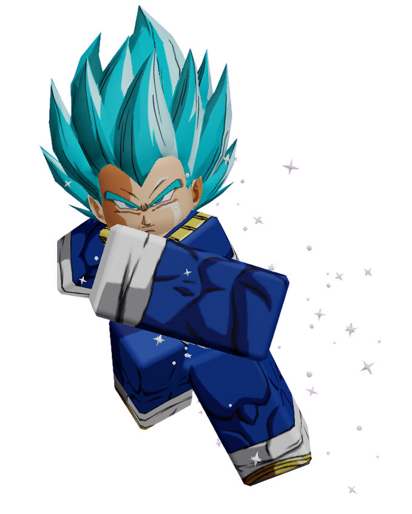

◆ ARCHIVE — HIGH PRIORITY ◆
VEGETA
Status: SAFE
Archive Classification: HIGH PRIORITY
Threat Level: EXTREME
DO NOT CHALLENGE WITHOUT PREPARATION
Quote
"There's one thing a Saiyan always keeps... his pride."
Short Bio
Vegeta entered Anime Showdown Ultimax with no interest in making friends or following anyone else's orders.
The proud Prince of all Saiyans sees the competition as another battlefield where only the strongest deserve victory.
While many contestants fight for a wish, Vegeta fights to prove one thing.
That nobody stands above him.
Not even the Host.
How They Arrived
Before ASU
Vegeta had just finished training.
Satisfied with his progress, he prepared to continue pushing himself even further.
Without warning, the gravity around him vanished.
The sky disappeared. Everything became silent.
When he opened his eyes... he was standing on an unfamiliar island.
Arrival
Vegeta's first instinct was simple.
Find whoever brought him here.
When no answer came... he decided to play along.
For now.
Personality
Vegeta is proud, stubborn, and fiercely competitive.
He refuses to show weakness, even when the odds are against him.
Although he often appears cold, Vegeta deeply values those he considers worthy allies.
He would never admit it.
But he fights hardest to protect the people he respects.
Current Story
Vegeta quickly became one of Team 1's strongest competitors.
While he claims to care only about becoming stronger, his actions often tell a different story.
He has repeatedly stepped in to protect teammates during dangerous challenges, even while insisting he only did it because they were useful.
As the competition grows darker, Vegeta has begun questioning whether defeating the Host will require more than raw strength.
Relationships
Allies
- David Martinez — Vegeta respects David's determination, even if he thinks he's reckless.
- Gyro Zeppeli — Gyro constantly annoys Vegeta. Somehow... he still ends up talking to him.
- Ethan Gold — Vegeta sees Ethan as inexperienced but willing to improve.
Rivals
- Frieza — Their hatred survived even being dragged into another universe. Neither intends to lose.
- Garou — Vegeta enjoys testing himself against Garou's constantly evolving strength.
Enemies
- The Host — Vegeta refuses to accept that anyone has authority over him.
Threat Assessment
Power Level
Archive Classification:
SAIYAN PRINCE
Lore
Vegeta has openly challenged the Host's authority more than once.
Unlike many contestants, he doesn't fear the Host.
He simply views him as another opponent.
Recovered Archive notes suggest the Host originally expected Vegeta to become one of the biggest problems on the island.
Instead... Vegeta became one of the strongest defenders of Team 1.
One deleted Archive observation states:
"His pride may become humanity's greatest weapon."
The note was removed shortly after being created.
Additional Notes
- One of the physically strongest contestants remaining.
- Refuses to back down from any challenge.
- Frequently trains alone between episodes.
- Has destroyed three training areas during practice.
- Continues his rivalry with Frieza inside ASU.
- The Host has attempted to provoke Vegeta multiple times with little success.
Even gods can fall.